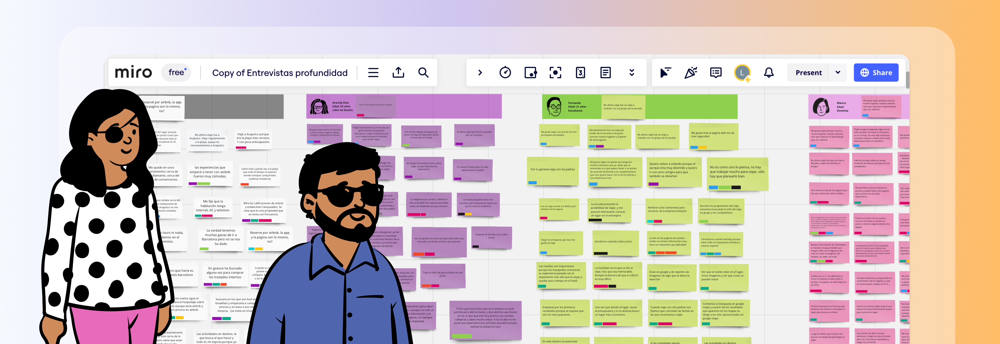
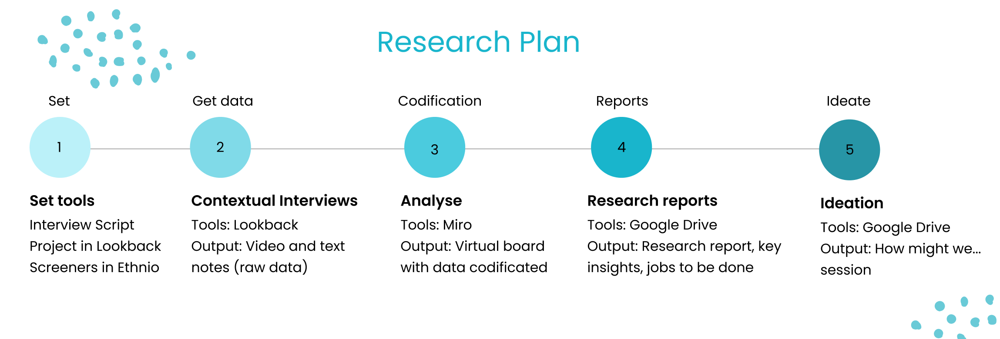
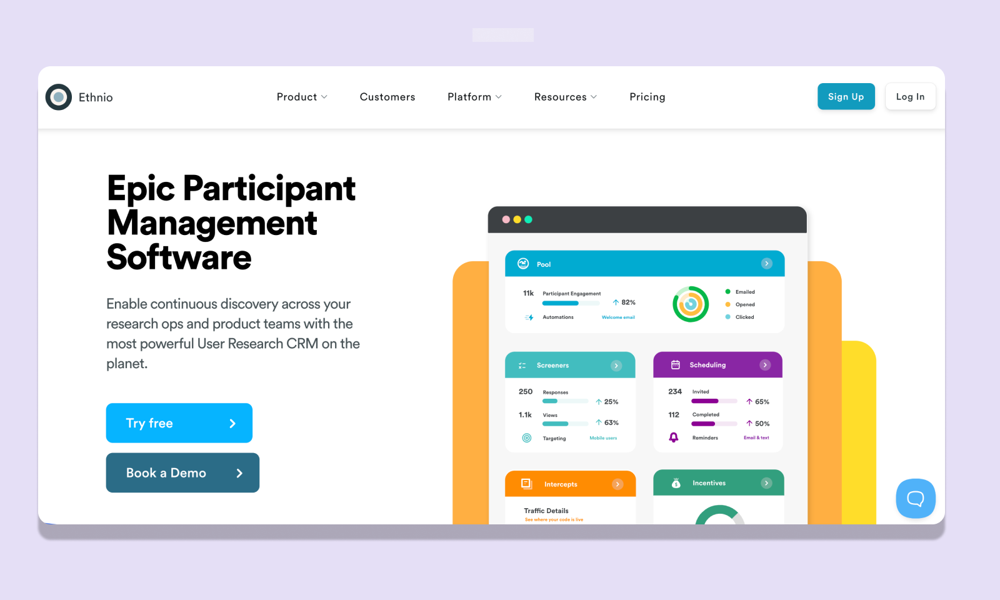
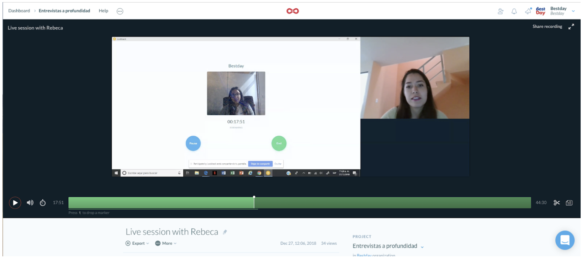
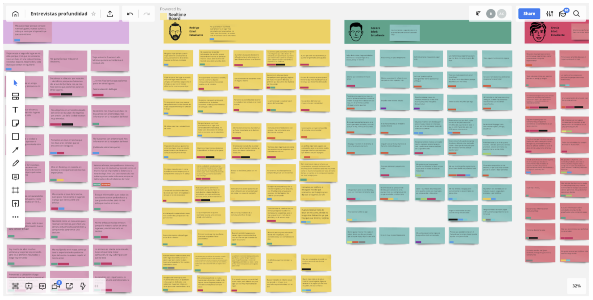
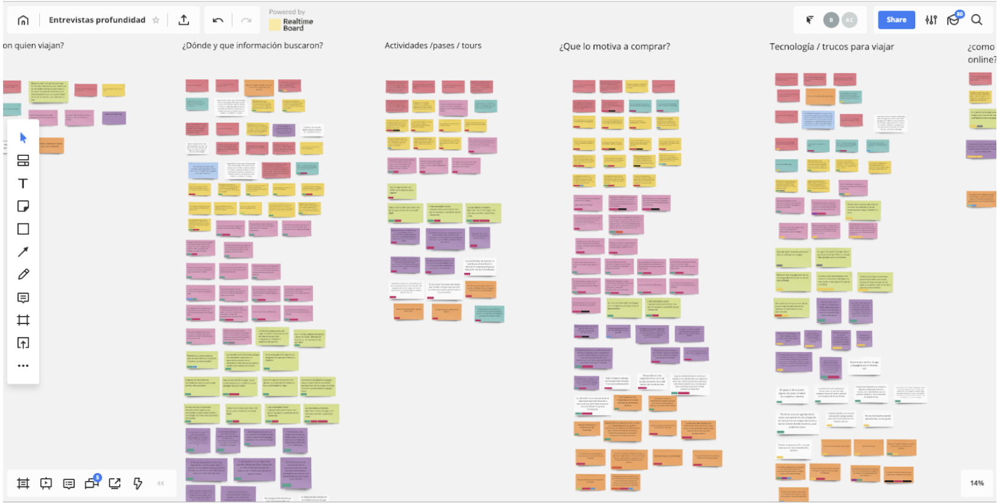
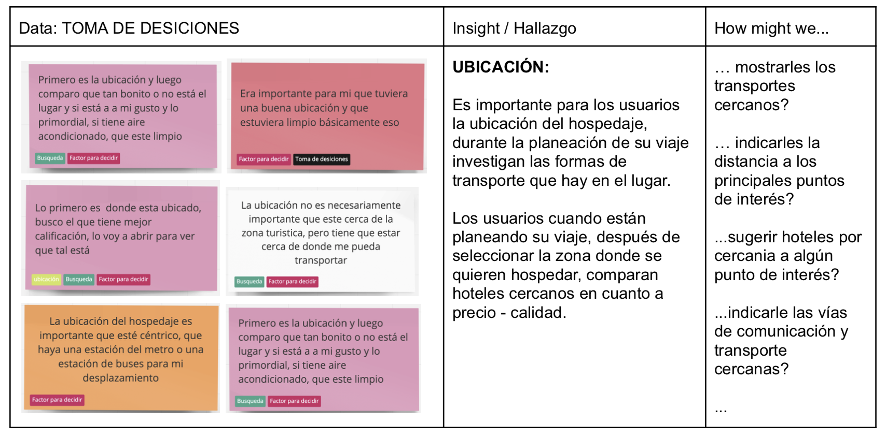

Understanding the Traveler’s Mindset: A UX Journey into Online Hotel Bookings

I worked as a UX Designer at a leading OTA in Latin America to better understand how people search for and book hotels online. The goal was to uncover user pain points and surface opportunities that analytics alone could not reveal.
Our product analytics showed what users did, but not why. We needed a clear, evidence-based picture of the booking journey so the product team could make informed decisions about new features.
By getting closer to our clients, we better understood the key factors that influence their decisions when planning a trip and booking online. To design a better product, it's essential to understand how users search and make decisions.
I began by creating a roadmap to outline the timeline for the entire research process, from recruiting participants to delivering a report with the insights gathered.

We used Ethnio to screen participants, and conducted interviews through Lookback.

The sample was 18 users, aged 21–39 (7 women and 11 men). Sessions were recorded and reviewed for thematic analysis.

We created a virtual board in Miro to collect and synthesize findings; this made it easy to share insights with stakeholders and collaborate on themes. We extracted users' comments as post-its, grouped them into themes, and translated those into concise findings. At this stage we focused on insights, not solutions.


A "How Might We" session helped transform findings into actionable ideas and early concepts for testing.

After synthesizing insights from the research and behavioral data, several clear patterns emerged about the traveler mindset during the booking process.
Reviews strongly influence booking decisions. Users consult travel blogs, social networks and review pages to assess accommodation quality. This reinforced marketing efforts around influencer recommendations.
Location is a critical factor for users considering transport and access. This led us to test search-by-map and measure its usability in subsequent rounds.
A detailed report was shared with the product team and PMs. Qualitative insights and GA data helped prioritize initiatives and track previously unmeasured user behaviors.
The research process taught me several valuable lessons about conducting remote interviews and synthesis.
Not all users attend sessions. Scheduling two users simultaneously ensures a researcher can always conduct a session if someone doesn't show up.
Make sure users receive clear instructions for installing any required programs beforehand to avoid technical delays.
Transcribing interviews takes significantly more time than anticipated but is crucial for avoiding unreliable interpretation of data.
Making research findings accessible ensures the entire team understands and empathizes with user pain points and the challenges they face.